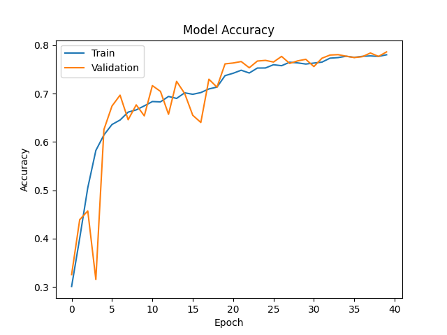
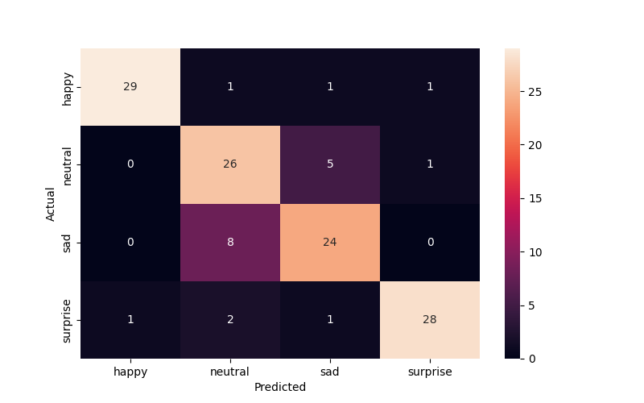
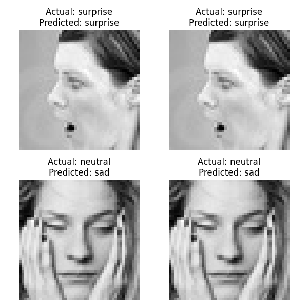

        <html>
        <head><title>Model Summary - 2024-04-10 13:55:30</title></head>
        <body>
        <h1>Model Configuration</h1>
        <pre>model:
  compile:
    learning_rate: 0.01
    optimizer: RMSprop
    optimizer_name: adam
  data:
    color_layers: 1
    color_mode: grayscale
    img_height: 48
    img_width: 48
    use_data_loaders: true
  layers:
  - filters: 64
    kernel_size:
    - 2
    - 2
    padding: same
    type: Conv2D
  - type: BatchNormalization
  - alpha: 0.1
    type: LeakyReLU
  - pool_size:
    - 2
    - 2
    type: MaxPooling2D
  - filters: 128
    kernel_size:
    - 2
    - 2
    padding: same
    type: Conv2D
  - type: BatchNormalization
  - alpha: 0.1
    type: LeakyReLU
  - pool_size:
    - 2
    - 2
    type: MaxPooling2D
  - filters: 256
    kernel_size:
    - 2
    - 2
    padding: same
    type: Conv2D
  - type: BatchNormalization
  - alpha: 0.1
    type: LeakyReLU
  - pool_size:
    - 2
    - 2
    type: MaxPooling2D
  - filters: 512
    kernel_size:
    - 2
    - 2
    padding: same
    type: Conv2D
  - type: BatchNormalization
  - alpha: 0.1
    type: LeakyReLU
  - pool_size:
    - 2
    - 2
    type: MaxPooling2D
  - filters: 128
    kernel_size:
    - 2
    - 2
    padding: same
    type: Conv2D
  - type: BatchNormalization
  - alpha: 0.1
    type: LeakyReLU
  - pool_size:
    - 2
    - 2
    type: MaxPooling2D
  - type: Flatten
  - activation: relu
    type: Dense
    units: 512
  - activation: relu
    type: Dense
    units: 128
  - type: Dense
    units: 64
  - type: BatchNormalization
  - type: ReLU
  - activation: softmax
    type: Dense
    units: 4
  train:
    batch_size: 32
    epochs: 40
    patience: 7
</pre>
        <h1>Model Summary</h1>
        <pre>Model: "sequential"
┏━━━━━━━━━━━━━━━━━━━━━━━━━━━━━━━━━━━━━━┳━━━━━━━━━━━━━━━━━━━━━━━━━━━━━┳━━━━━━━━━━━━━━━━━┓
┃ Layer (type)                         ┃ Output Shape                ┃         Param # ┃
┡━━━━━━━━━━━━━━━━━━━━━━━━━━━━━━━━━━━━━━╇━━━━━━━━━━━━━━━━━━━━━━━━━━━━━╇━━━━━━━━━━━━━━━━━┩
│ conv2d (Conv2D)                      │ (None, 48, 48, 64)          │             320 │
├──────────────────────────────────────┼─────────────────────────────┼─────────────────┤
│ batch_normalization                  │ (None, 48, 48, 64)          │             256 │
│ (BatchNormalization)                 │                             │                 │
├──────────────────────────────────────┼─────────────────────────────┼─────────────────┤
│ leaky_re_lu (LeakyReLU)              │ (None, 48, 48, 64)          │               0 │
├──────────────────────────────────────┼─────────────────────────────┼─────────────────┤
│ max_pooling2d (MaxPooling2D)         │ (None, 24, 24, 64)          │               0 │
├──────────────────────────────────────┼─────────────────────────────┼─────────────────┤
│ conv2d_1 (Conv2D)                    │ (None, 24, 24, 128)         │          32,896 │
├──────────────────────────────────────┼─────────────────────────────┼─────────────────┤
│ batch_normalization_1                │ (None, 24, 24, 128)         │             512 │
│ (BatchNormalization)                 │                             │                 │
├──────────────────────────────────────┼─────────────────────────────┼─────────────────┤
│ leaky_re_lu_1 (LeakyReLU)            │ (None, 24, 24, 128)         │               0 │
├──────────────────────────────────────┼─────────────────────────────┼─────────────────┤
│ max_pooling2d_1 (MaxPooling2D)       │ (None, 12, 12, 128)         │               0 │
├──────────────────────────────────────┼─────────────────────────────┼─────────────────┤
│ conv2d_2 (Conv2D)                    │ (None, 12, 12, 256)         │         131,328 │
├──────────────────────────────────────┼─────────────────────────────┼─────────────────┤
│ batch_normalization_2                │ (None, 12, 12, 256)         │           1,024 │
│ (BatchNormalization)                 │                             │                 │
├──────────────────────────────────────┼─────────────────────────────┼─────────────────┤
│ leaky_re_lu_2 (LeakyReLU)            │ (None, 12, 12, 256)         │               0 │
├──────────────────────────────────────┼─────────────────────────────┼─────────────────┤
│ max_pooling2d_2 (MaxPooling2D)       │ (None, 6, 6, 256)           │               0 │
├──────────────────────────────────────┼─────────────────────────────┼─────────────────┤
│ conv2d_3 (Conv2D)                    │ (None, 6, 6, 512)           │         524,800 │
├──────────────────────────────────────┼─────────────────────────────┼─────────────────┤
│ batch_normalization_3                │ (None, 6, 6, 512)           │           2,048 │
│ (BatchNormalization)                 │                             │                 │
├──────────────────────────────────────┼─────────────────────────────┼─────────────────┤
│ leaky_re_lu_3 (LeakyReLU)            │ (None, 6, 6, 512)           │               0 │
├──────────────────────────────────────┼─────────────────────────────┼─────────────────┤
│ max_pooling2d_3 (MaxPooling2D)       │ (None, 3, 3, 512)           │               0 │
├──────────────────────────────────────┼─────────────────────────────┼─────────────────┤
│ conv2d_4 (Conv2D)                    │ (None, 3, 3, 128)           │         262,272 │
├──────────────────────────────────────┼─────────────────────────────┼─────────────────┤
│ batch_normalization_4                │ (None, 3, 3, 128)           │             512 │
│ (BatchNormalization)                 │                             │                 │
├──────────────────────────────────────┼─────────────────────────────┼─────────────────┤
│ leaky_re_lu_4 (LeakyReLU)            │ (None, 3, 3, 128)           │               0 │
├──────────────────────────────────────┼─────────────────────────────┼─────────────────┤
│ max_pooling2d_4 (MaxPooling2D)       │ (None, 1, 1, 128)           │               0 │
├──────────────────────────────────────┼─────────────────────────────┼─────────────────┤
│ flatten (Flatten)                    │ (None, 128)                 │               0 │
├──────────────────────────────────────┼─────────────────────────────┼─────────────────┤
│ dense (Dense)                        │ (None, 512)                 │          66,048 │
├──────────────────────────────────────┼─────────────────────────────┼─────────────────┤
│ dense_1 (Dense)                      │ (None, 128)                 │          65,664 │
├──────────────────────────────────────┼─────────────────────────────┼─────────────────┤
│ dense_2 (Dense)                      │ (None, 64)                  │           8,256 │
├──────────────────────────────────────┼─────────────────────────────┼─────────────────┤
│ batch_normalization_5                │ (None, 64)                  │             256 │
│ (BatchNormalization)                 │                             │                 │
├──────────────────────────────────────┼─────────────────────────────┼─────────────────┤
│ re_lu (ReLU)                         │ (None, 64)                  │               0 │
├──────────────────────────────────────┼─────────────────────────────┼─────────────────┤
│ dense_3 (Dense)                      │ (None, 4)                   │             260 │
└──────────────────────────────────────┴─────────────────────────────┴─────────────────┘
 Total params: 1,096,452 (4.18 MB)
 Trainable params: 1,094,148 (4.17 MB)
 Non-trainable params: 2,304 (9.00 KB)
</pre>
        <h2>Test Accuracy</h2>
        <p>
1/4 ━━━━━━━━━━━━━━━━━━━━ 0s 16ms/step - accuracy: 0.9062 - loss: 0.3807
4/4 ━━━━━━━━━━━━━━━━━━━━ 0s 4ms/step - accuracy: 0.8521 - loss: 0.4633 

1/4 ━━━━━━━━━━━━━━━━━━━━ 1s 414ms/step
4/4 ━━━━━━━━━━━━━━━━━━━━ 0s 4ms/step  
</p>
        <h2>Accuracy Plot</h2>
        
        <h2>Classification Report</h2>
        <pre>              precision    recall  f1-score   support

       happy       0.97      0.91      0.94        32
     neutral       0.70      0.81      0.75        32
         sad       0.77      0.75      0.76        32
    surprise       0.93      0.88      0.90        32

    accuracy                           0.84       128
   macro avg       0.84      0.84      0.84       128
weighted avg       0.84      0.84      0.84       128

</pre>
        <h2>History</h2>
        <pre>Epoch 1: accuracy: 0.3012, loss: 1.3760, val_accuracy: 0.3257, val_loss: 1.3591, learning_rate: 0.0100
Epoch 2: accuracy: 0.4009, loss: 1.2159, val_accuracy: 0.4392, val_loss: 1.3736, learning_rate: 0.0100
Epoch 3: accuracy: 0.5053, loss: 1.0795, val_accuracy: 0.4573, val_loss: 1.4060, learning_rate: 0.0100
Epoch 4: accuracy: 0.5824, loss: 0.9664, val_accuracy: 0.3157, val_loss: 2.0527, learning_rate: 0.0100
Epoch 5: accuracy: 0.6145, loss: 0.9007, val_accuracy: 0.6257, val_loss: 0.9261, learning_rate: 0.0100
Epoch 6: accuracy: 0.6361, loss: 0.8644, val_accuracy: 0.6743, val_loss: 0.8061, learning_rate: 0.0100
Epoch 7: accuracy: 0.6454, loss: 0.8418, val_accuracy: 0.6968, val_loss: 0.7456, learning_rate: 0.0100
Epoch 8: accuracy: 0.6617, loss: 0.8160, val_accuracy: 0.6460, val_loss: 0.8096, learning_rate: 0.0100
Epoch 9: accuracy: 0.6664, loss: 0.8020, val_accuracy: 0.6767, val_loss: 0.7813, learning_rate: 0.0100
Epoch 10: accuracy: 0.6746, loss: 0.7892, val_accuracy: 0.6540, val_loss: 0.8250, learning_rate: 0.0100
Epoch 11: accuracy: 0.6836, loss: 0.7746, val_accuracy: 0.7165, val_loss: 0.7095, learning_rate: 0.0100
Epoch 12: accuracy: 0.6829, loss: 0.7741, val_accuracy: 0.7046, val_loss: 0.7205, learning_rate: 0.0100
Epoch 13: accuracy: 0.6942, loss: 0.7497, val_accuracy: 0.6572, val_loss: 0.8391, learning_rate: 0.0100
Epoch 14: accuracy: 0.6901, loss: 0.7521, val_accuracy: 0.7253, val_loss: 0.6733, learning_rate: 0.0100
Epoch 15: accuracy: 0.7016, loss: 0.7254, val_accuracy: 0.7002, val_loss: 0.7184, learning_rate: 0.0100
Epoch 16: accuracy: 0.6986, loss: 0.7339, val_accuracy: 0.6552, val_loss: 0.8588, learning_rate: 0.0100
Epoch 17: accuracy: 0.7022, loss: 0.7273, val_accuracy: 0.6403, val_loss: 0.8973, learning_rate: 0.0100
Epoch 18: accuracy: 0.7096, loss: 0.7091, val_accuracy: 0.7298, val_loss: 0.6976, learning_rate: 0.0100
Epoch 19: accuracy: 0.7135, loss: 0.7053, val_accuracy: 0.7133, val_loss: 0.7083, learning_rate: 0.0100
Epoch 20: accuracy: 0.7372, loss: 0.6560, val_accuracy: 0.7615, val_loss: 0.5958, learning_rate: 0.0020
Epoch 21: accuracy: 0.7421, loss: 0.6422, val_accuracy: 0.7633, val_loss: 0.5962, learning_rate: 0.0020
Epoch 22: accuracy: 0.7484, loss: 0.6256, val_accuracy: 0.7663, val_loss: 0.5771, learning_rate: 0.0020
Epoch 23: accuracy: 0.7426, loss: 0.6257, val_accuracy: 0.7535, val_loss: 0.6249, learning_rate: 0.0020
Epoch 24: accuracy: 0.7529, loss: 0.6196, val_accuracy: 0.7673, val_loss: 0.5840, learning_rate: 0.0020
Epoch 25: accuracy: 0.7530, loss: 0.6185, val_accuracy: 0.7687, val_loss: 0.5889, learning_rate: 0.0020
Epoch 26: accuracy: 0.7597, loss: 0.6091, val_accuracy: 0.7653, val_loss: 0.5858, learning_rate: 0.0020
Epoch 27: accuracy: 0.7577, loss: 0.6042, val_accuracy: 0.7770, val_loss: 0.5682, learning_rate: 0.0020
Epoch 28: accuracy: 0.7649, loss: 0.5979, val_accuracy: 0.7625, val_loss: 0.6043, learning_rate: 0.0020
Epoch 29: accuracy: 0.7635, loss: 0.5912, val_accuracy: 0.7677, val_loss: 0.5955, learning_rate: 0.0020
Epoch 30: accuracy: 0.7611, loss: 0.5956, val_accuracy: 0.7709, val_loss: 0.5776, learning_rate: 0.0020
Epoch 31: accuracy: 0.7632, loss: 0.5916, val_accuracy: 0.7559, val_loss: 0.6144, learning_rate: 0.0020
Epoch 32: accuracy: 0.7651, loss: 0.5877, val_accuracy: 0.7732, val_loss: 0.5805, learning_rate: 0.0020
Epoch 33: accuracy: 0.7733, loss: 0.5661, val_accuracy: 0.7798, val_loss: 0.5678, learning_rate: 0.0004
Epoch 34: accuracy: 0.7745, loss: 0.5678, val_accuracy: 0.7806, val_loss: 0.5699, learning_rate: 0.0004
Epoch 35: accuracy: 0.7773, loss: 0.5586, val_accuracy: 0.7774, val_loss: 0.5762, learning_rate: 0.0004
Epoch 36: accuracy: 0.7750, loss: 0.5637, val_accuracy: 0.7746, val_loss: 0.5772, learning_rate: 0.0004
Epoch 37: accuracy: 0.7771, loss: 0.5593, val_accuracy: 0.7764, val_loss: 0.5784, learning_rate: 0.0004
Epoch 38: accuracy: 0.7780, loss: 0.5610, val_accuracy: 0.7840, val_loss: 0.5649, learning_rate: 0.0004
Epoch 39: accuracy: 0.7769, loss: 0.5541, val_accuracy: 0.7770, val_loss: 0.5771, learning_rate: 0.0004
Epoch 40: accuracy: 0.7803, loss: 0.5521, val_accuracy: 0.7862, val_loss: 0.5567, learning_rate: 0.0004
</pre>
        <h2>Confusion Matrix</h2>
        
        <h2>Predicted Images</h2>
        
        </body>
        </html>
        